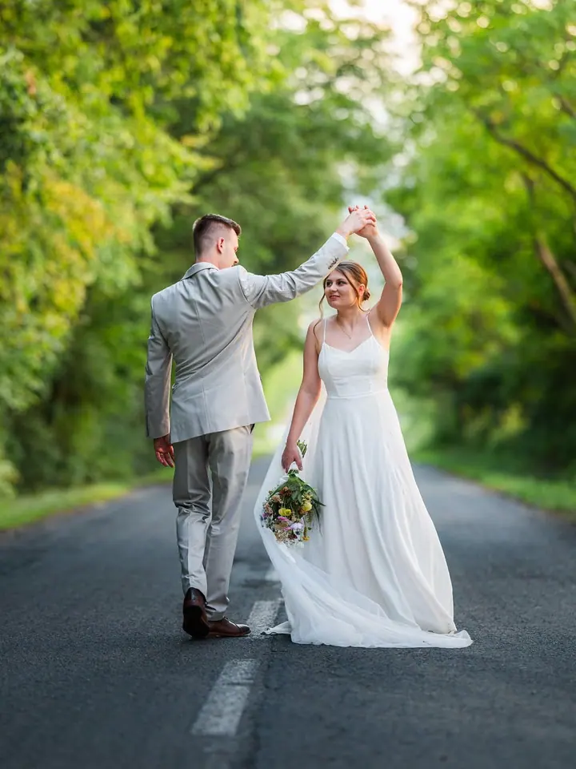
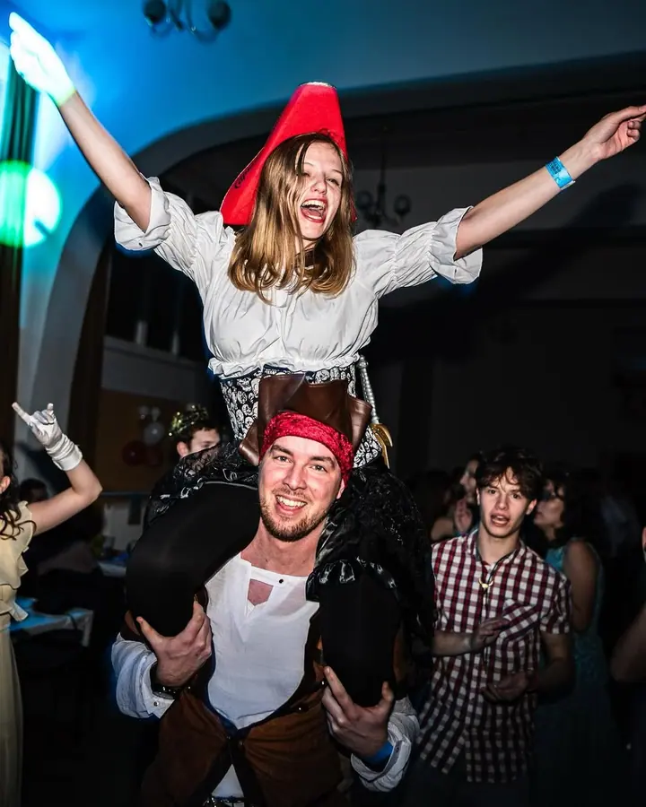
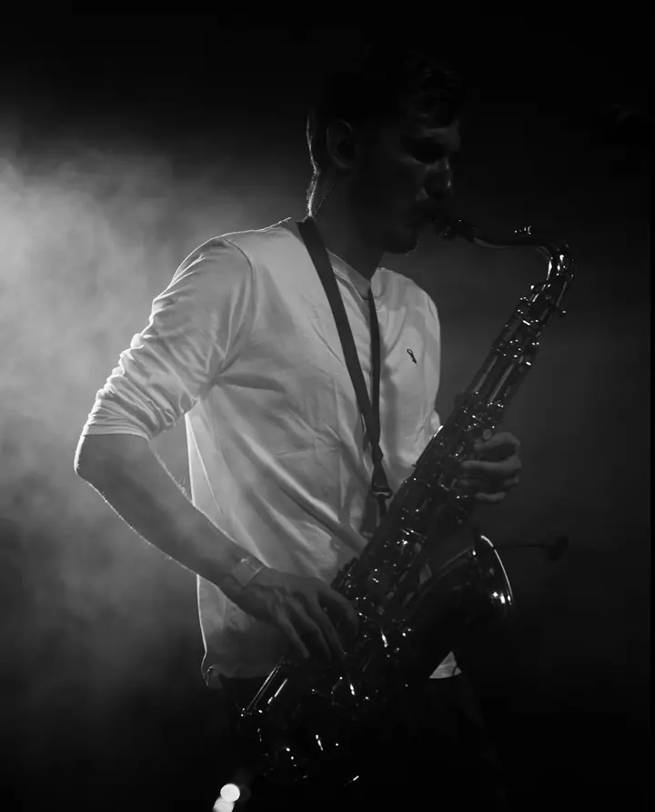
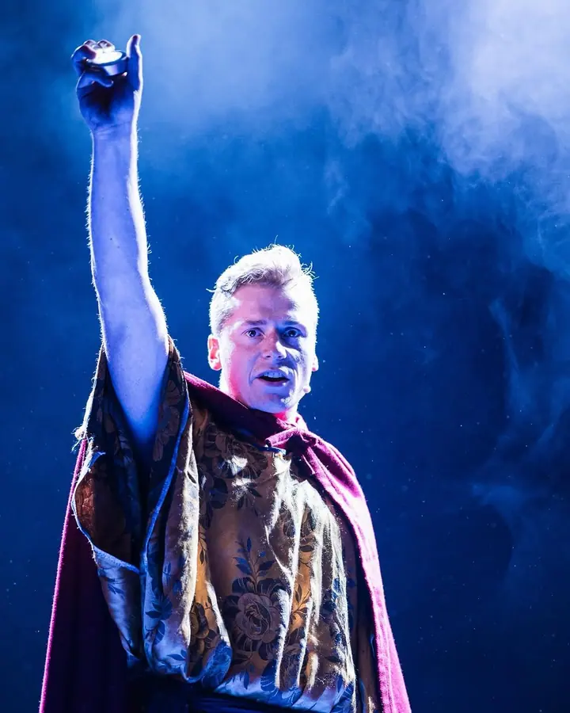
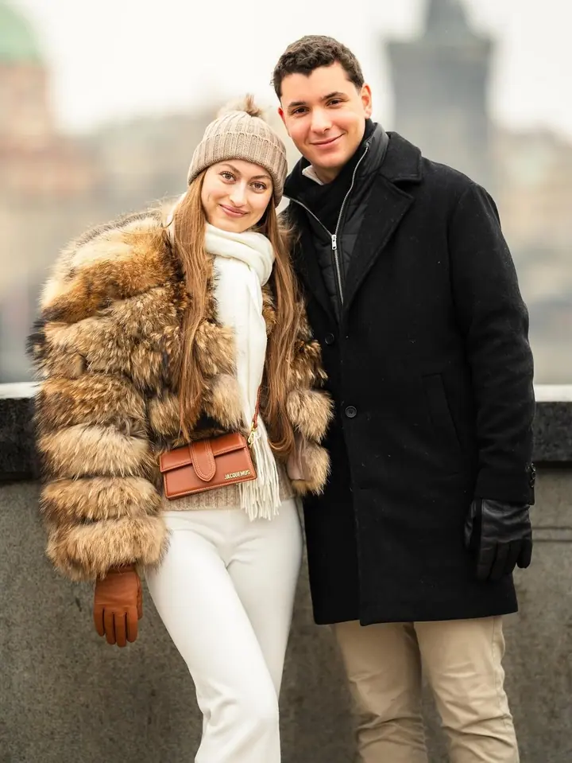
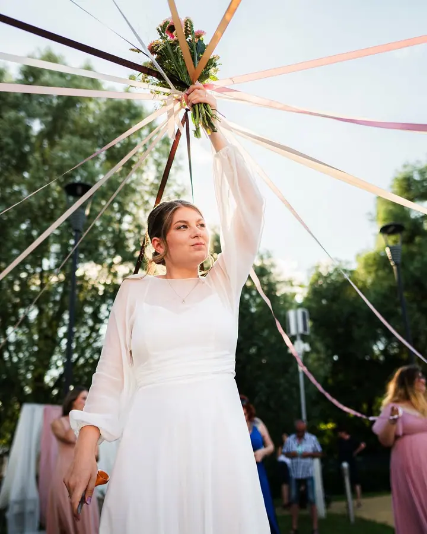
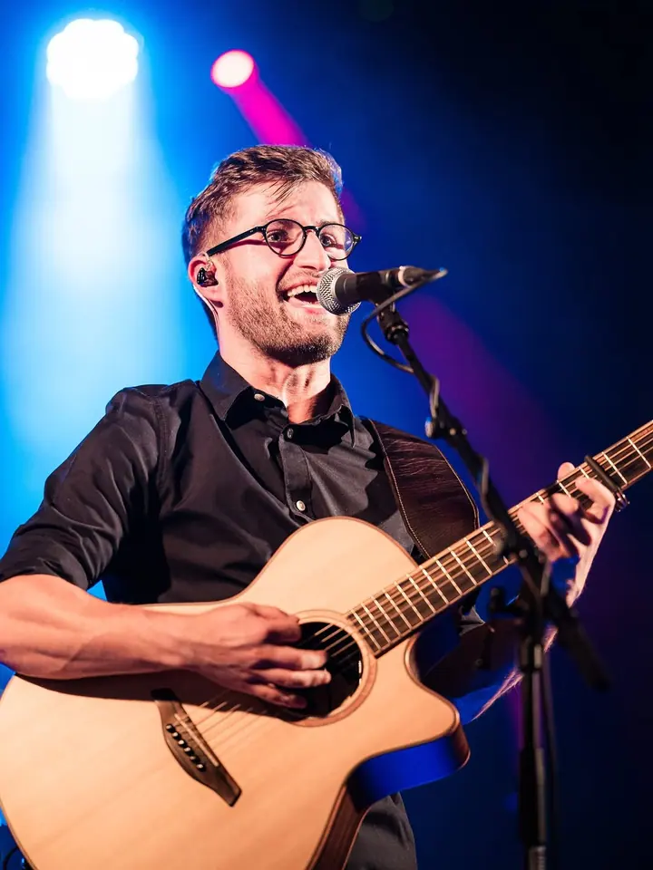
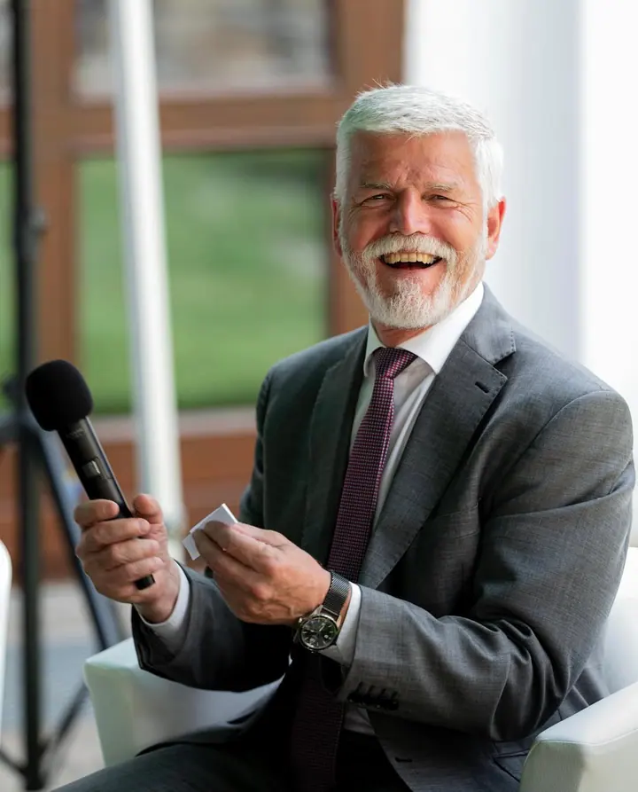
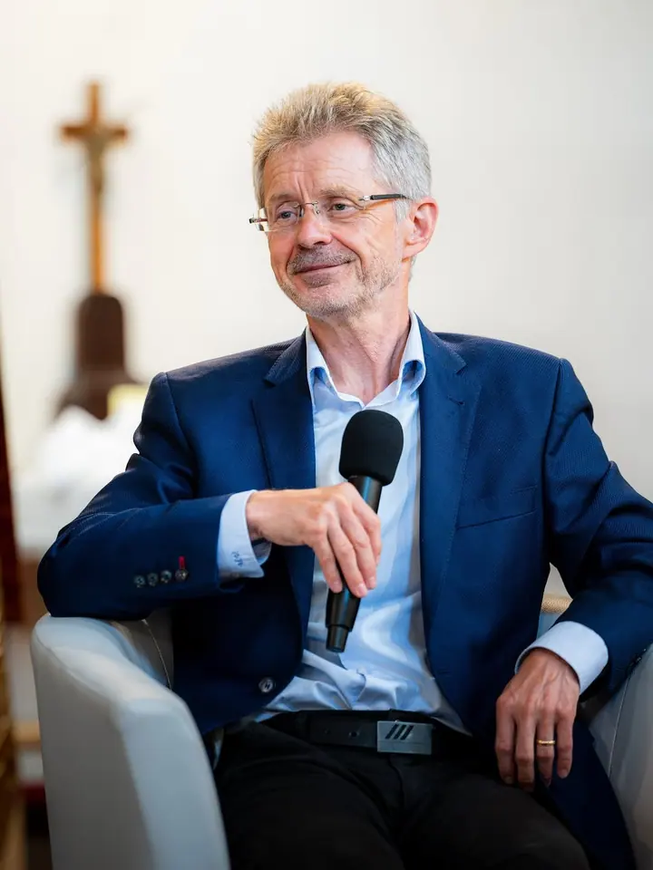
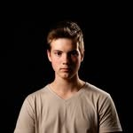

01 / 04
Svatby
Svatební den uteče velmi rychle. Zachytím příběh od příprav přes obřad až po večerní zábavu tak, aby vám fotky připomněly atmosféru celého dne.
Zeptat se na termín→








Fotím tak, jak věci skutečně probíhají
Zeptat se na termín →(01) Ahoj
Jmenuji se Martin Prášek a fotím svatby , páry i plesy a koncerty tak, jak věci skutečně probíhají. Nechci vás nutit do póz, chci být u momentů, které si budete pamatovat i za deset let.
(02) Co fotím
01 / 04
Svatební den uteče velmi rychle. Zachytím příběh od příprav přes obřad až po večerní zábavu tak, aby vám fotky připomněly atmosféru celého dne.
Zeptat se na termín→02 / 04
Chci, abyste se cítili v klidu, smáli se a byli sami sebou. Neřeším dokonalé pózy, ale přirozený úsměv a drobné interakce mezi vámi.
Zeptat se na termín→03 / 04
Reportáže fotím nenápadně. Sleduji dění, lidi a drobné momenty, které dotvářejí atmosféru, aby fotky dávaly smysl jako celek.
Zeptat se na termín→Dále nabízím
Fotím koncerty a vystoupení přímo mezi lidmi. Zajímá mě světlo, energie na pódiu i to, co se děje v publiku.
↗(04) Postup
Od první zprávy po hotovou galerii.
Krok 1 z 4
Vyplňte formulář na webu, nebo mi napište na foto@mprasek.cz. Ozvu se vám a domluvíme se, co si představujete.
Krok 2 z 4
Rád vás poznám osobně, poslechnu si váš příběh a probereme, jak bude den nebo akce probíhat.
Krok 3 z 4
Pohybuji se nenápadně mezi lidmi, nechávám věci plynout a hledám momenty, které vznikají samy od sebe.
Krok 4 z 4
Fotky vyberu a upravím tak, aby dávaly smysl jako celek a připomněly vám atmosféru dne.
Nechci být režisérem dne, chci být jeho součástí
(05) Za objektivem
Focení je pro mě hlavně o lidech a o tom, co se mezi nimi děje. O vztazích, emocích a chvílích, které mají smysl právě proto, že nejsou dokonalé ani naplánované. První svatbu jsem fotil už v patnácti letech a tehdy jsem ještě netušil, jak mě to prostředí pohltí.
Na svatbách se snažím zapadnout přirozeně mezi lidi. Nechci být rušivým elementem ani režisérem dne, většinu času nechávám věci plynout a hledám momenty, které vznikají samy od sebe. Když je potřeba, rád pomůžu, nebo jsem prostě dalším člověkem, se kterým je fajn se bavit.
Když zrovna nefotím lidi, najdete mě nejčastěji v přírodě s foťákem v ruce. Krajinu fotím v Česku, na Slovensku, v Itálii i jinde. Tam si vyčistím hlavu, zpomalím a zase si připomenu, proč mě focení tak baví.

Martin
Martin Prášek · Svatební a reportážní fotograf
Jen minimálně. Dokonalé pózy neřeším, důležitější je, abyste se cítili dobře a byli sami sebou. Nejlepší fotky vznikají z legrace a ze společného času.
Ano, fotím plesy, koncerty a další eventy. Reportáže fotím nenápadně, sleduji dění a lidi kolem.
Je lehké a zábavné a hodí se třeba i před svatbou. Poznáme se, zasmějeme se a vy pak na svatbě víte, s kým máte tu čest.
Stačí vyplnit poptávkový formulář na webu, nebo napsat na foto@mprasek.cz. Fotím hlavně na Vysočině, s místem se ale domluvíme.
(07) Kontakt
Napište pár vět o tom, co si představujete, a termín, který se vám hodí.
foto@mprasek.cz